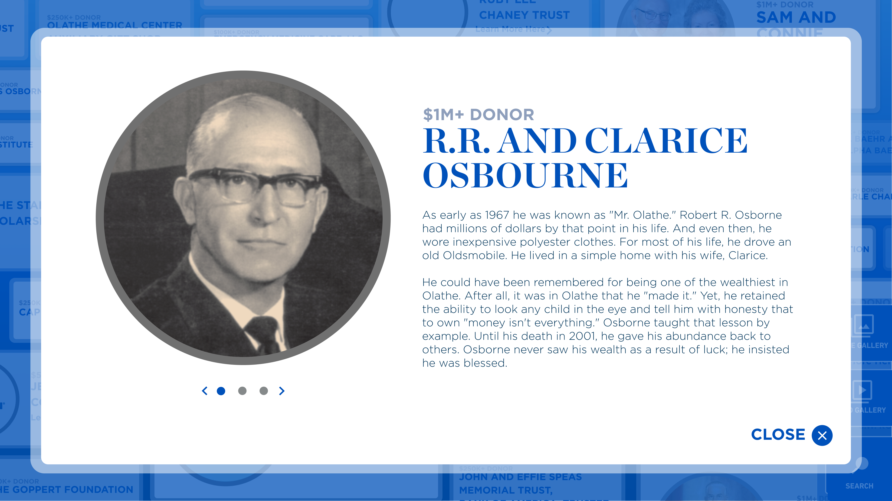
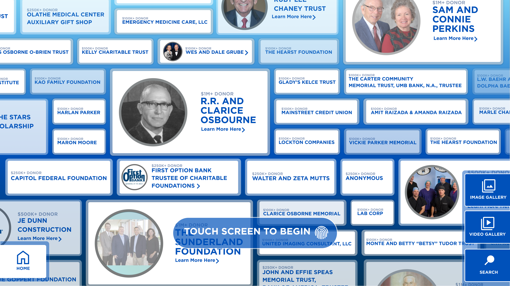
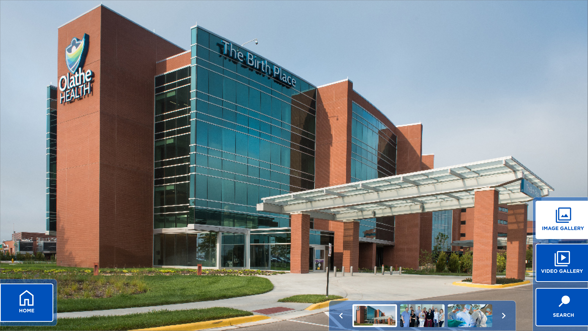
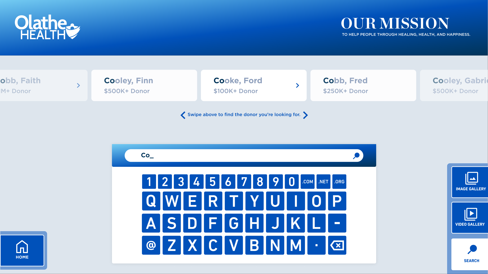

Redesigning engaging recognition with digital donor walls
Olathe Health and University of Kansas Health System
UI Design • Re-Branding
Timeline
July 2023 - August 2023Tools
Team
Solo UX Designer
PROJECT OVERVIEW
Working as an intern at Dimensional Innovations, I had the opportunity to redesign the digital
component of a donor wall for Olathe Health Center.
With the Health Center undergoing a rebrand after joining the University of Kansas' Health System,
I had the goal of redesigning the UI according to KU's existing style guide as well as adding additional
screens for more information. This included biographies, image and video galleries, and a horizontal search screen.




